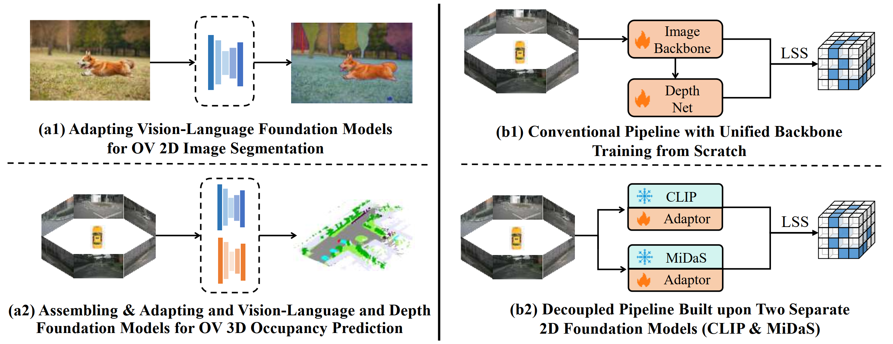

Introduction

Main idea of our VEON* framework.
Left: Referring to their strong data prior, 2D vision-language foundation models (e.g., CLIP) greatly benefit open-vocabulary (OV) 2D perception tasks.
Inspired by this, when handling 3D open-vocabulary perception tasks, we propose integrating not only a vision-language foundation model, but also a depth foundation model.
Right: The common pipeline of building a 3D occupancy model is to train a unified 2D backbone for depth estimation and semantic extraction from scratch.
In contrast, we design a decoupled pipeline that assembles and adapts both a depth foundation model (e.g., MiDaS) and a vision-language foundation model (e.g., CLIP), for open-vocabulary 3D occupancy prediction.
Main idea of our VEON* framework. Left: Referring to their strong data prior, 2D vision-language foundation models (e.g., CLIP) greatly benefit open-vocabulary (OV) 2D perception tasks. Inspired by this, when handling 3D open-vocabulary perception tasks, we propose integrating not only a vision-language foundation model, but also a depth foundation model. Right: The common pipeline of building a 3D occupancy model is to train a unified 2D backbone for depth estimation and semantic extraction from scratch. In contrast, we design a decoupled pipeline that assembles and adapts both a depth foundation model (e.g., MiDaS) and a vision-language foundation model (e.g., CLIP), for open-vocabulary 3D occupancy prediction.
Method
Framework overview. Our VEON* consists of two training stages: depth pretraining and occupancy prediction. Left: In the depth pretraining stage (i.e., stage 1), we adapt the MiDaS backbone with a relative-metric-bin depth transformation adaptor to estimate the bin depth for LSS feature lifting. Low-rank adaptation (LoRA) is integrated for enhanced domain transfer. Right: In the occupancy prediction stage (i.e., stage 2), we unleash the power of CLIP via equipping a High-resolution Side Adaptor (HSA). The refined high-resolution CLIP semantic features are lifted via LSS and then passed through 3D convolutions for 3D occupancy. The network reserves the capability of recognizing open-world objects by aligning the 3D representation with 2D language-aligned embeddings, determined by the 2D open-vocabulary segmentor SAN. The alignment process is conducted in a priority-concerned manner, prioritizing rare objects. Besides, the network can optionally exploit temporal information via our Deformable Temporal Fusion (DTF) module for better performance.
Occupancy Prediction on Occ3D-nuScenes
Performance of our VEON* on Occ3D-nuScenes occupancy benchmark (validation set) without any manual semantic labels. Our VEON* models surpass the previous methods using no semantic labels by large margin. This proves that our VEON* models can learn dense representation in the 3D space that has rich semantic information.
Language-Driven Object Retreieval
Results on the open-vocabulary language-driven object retrieval benchmark proposed in POP-3D. Our VEON* models achieve mAPs between 30% and 41%, significantly outperforming all previous methods. The 3D representation output from VEON* models aligns well with language embeddings of CLIP, with impressive capability of handling open-vocabulary tasks.
Visualized Comparison


Visualization of occupancy prediction on the Occ3D-nuScenes occupancy benchmark (validation set). We select the VEON-L and the VEON*-L-T3 variant without any manual semantic labels, meaning that no 3D semantic labels is needed for obtaining the illustrated results. We visualize the surrounding images (column 1), ground truth and predicted occupancy (columns 2-3), and the retrieval results of certain open-vocabulary classes (columns 4-5). Our VEON/VEON* models demonstrate the strong capability of recognizing unseen objects (in orange), such as stairs, gravel, road signs, trucks, plants, drainage, trash bags, and trash cans.
BibTeX
@inproceedings{eccv24-veon,
title={VEON: Vocabulary-Enhanced Occupancy Prediction},
author={Zheng, Jilai and Tang, Pin and Wang, Zhongdao and Wang, Guoqing and Ren, Xiangxuan and Feng, Bailan and Ma, Chao},
booktitle={ECCV},
year={2024},
}
@article{ijcv25-underreview-veon,
title={Learning Vocabulary-Enhanced 3D Representation for Occupancy Prediction},
author={Zheng, Jilai and Tang, Pin and Wang, Zhongdao and Wang, Guoqing and Ren, Xiangxuan and Feng, Bailan and Ma, Chao},
journal={IJCV Under Review},
year={2025},
}